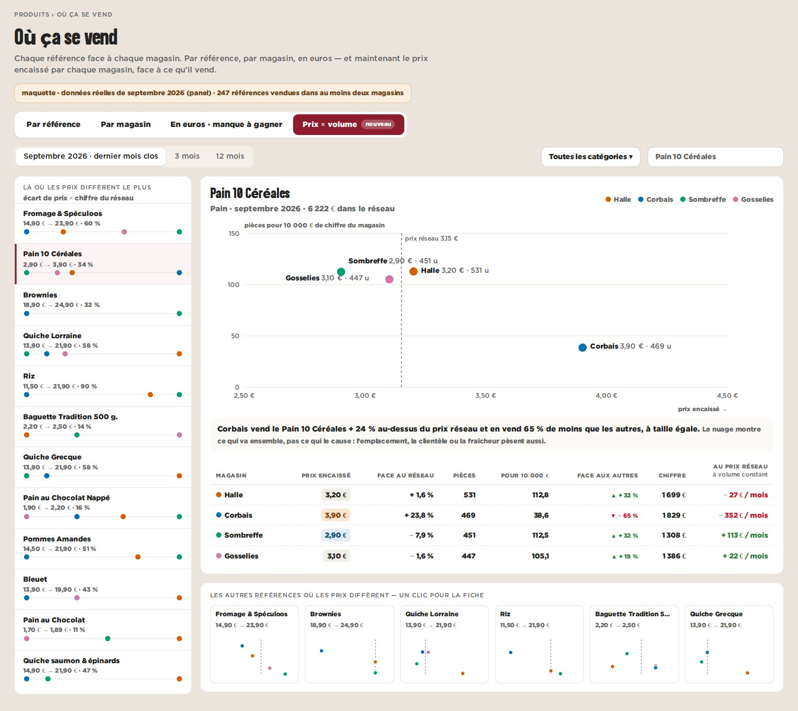

maquette · cockpit › Produits › Où ça se vend › Prix × volume · septembre 2026 · données réelles du panel
B — La fiche : le prix contre le volume, en nuage
Une référence à la fois : chaque magasin est un point — à droite il vend plus cher, en haut il vend plus (à taille égale). Le trait pointillé est le prix réseau. Dessous, le tableau et ce qu’un alignement changerait.
Pour
- Répond à la question telle qu’elle est posée : le volume face au prix.
- Une phrase de lecture, chiffrée, sous le graphique.
- Les petites vignettes mènent aux autres références.
Contre
- Une référence à la fois.
- Quatre magasins, quatre points : une tendance, pas une preuve.
